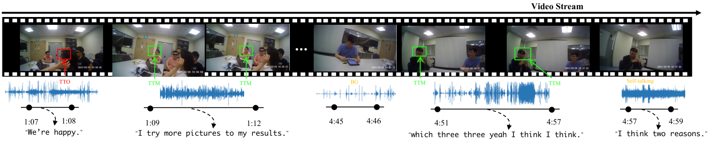
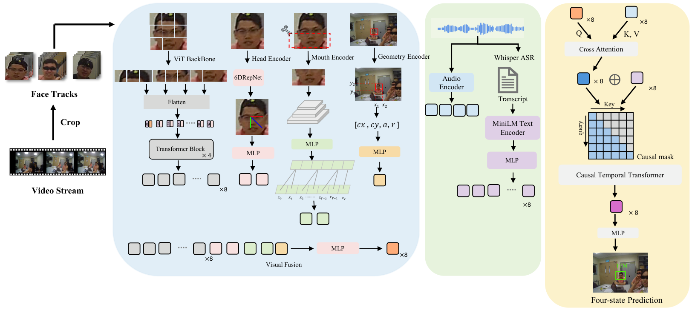

No active wearer-centered speaking interaction.
ACM Multimedia 2026
Talking to Me or Someone Else? Rethinking Talk-to-Me Detection in Egocentric Videos
The University of Texas at Dallas
ACM Multimedia 2026 Accepted
Acceptance Rate: 25%
We reformulate egocentric Talk-to-Me detection from offline clip-level recognition into an online frame-level prediction problem, enabling moment-level reasoning about who is speaking to the camera wearer.
We introduce the Online TTM Dataset, a benchmark derived from Ego4D Social with 406 egocentric videos and approximately 900K frame-level annotations across four socially meaningful speaking states: background, self-talking, talking-to-others, and talking-to-me.
Demo
Online social understanding in motion
The ACM Multimedia 2026 demo presents the task, benchmark, multimodal model, and representative online predictions.
Overview
From clip labels to online social states
The model predicts the current interaction state from present and past observations—never future frames.

The camera wearer is the current speaker.
A visible person speaks to someone other than the wearer.
A visible person directly addresses the camera wearer.
Method
Causal multimodal reasoning
Person-centered visual evidence is aligned with acoustic and speech-semantic cues, fused across modalities, and modeled causally over time.

Person-centered vision
- Facial appearance
- Head representation
- Mouth motion
- Wearer-centered geometry
Audio and semantics
- Frame-synchronous acoustic features
- Whisper-derived speech semantics
- Cross-modal attention
Online prediction
- Causal temporal Transformer
- Past-only context
- Four-state frame prediction
Dataset
Online TTM Dataset
The dataset is derived from the Ego4D Social benchmark and reconstructs frame-level supervision while preserving socially meaningful speaking-state transitions.
The project page does not provide a dataset download because no verified public release URL is currently available.
Results
Accurate and efficient online prediction
The proposed multimodal model leads the evaluated methods on both frame-level and segment-level TTM recognition while remaining compact.
Online Social Interaction Examples
Reasoning through changing social context
The primary qualitative demonstration is the embedded ACM MM video, which shows how online predictions evolve as speakers shift their attention among the wearer, themselves, and other people.
Paper
Abstract
Online understanding of who is talking to the camera wearer is a key capability for egocentric social interaction. However, existing talk-to-me (TTM) studies are commonly formulated as offline clip-level recognition, which is poorly aligned with online interaction and overlooks the diverse non-TTM speaking states that naturally arise in egocentric videos. In this paper, we revisit this problem by reformulating it as an online, frame-level prediction task.
Instead of treating TTM as a binary problem against a single negative class, we model it in the presence of diverse and previously underexplored non-TTM states, such as talking-to-others, self-talking, and background conditions.
To support this new formulation, we construct an Online TTM Dataset consisting of 406 egocentric video clips with approximately 900K annotated frames, each labeled with frame-level social interaction categories (e.g., background, TTM, talking-to-others, self-talking), by extending the Ego4D social interaction benchmark. In this benchmark, we evaluate five adapted baselines and develop a new model that integrates social cues across modalities.
Experimental results show that our multimodal model, which jointly leverages audio, visual, and speech-semantic cues, achieves 75.5% frame-level F1 on TTM, outperforming strong baselines and enabling a systematic analysis of how different speaking states affect TTM recognition.
@inproceedings{du2026talking,
title = {Talking to Me or Someone Else? Rethinking Talk-to-Me Detection in Egocentric Videos},
author = {Du, Feiyu and He, Xi and Li, Jia and Tian, Yapeng and Wu, Weili},
booktitle = {Proceedings of the 34th ACM International Conference on Multimedia},
year = {2026},
doi = {10.1145/3767308.3836441},
url = {https://arxiv.org/abs/2609.14118}
}